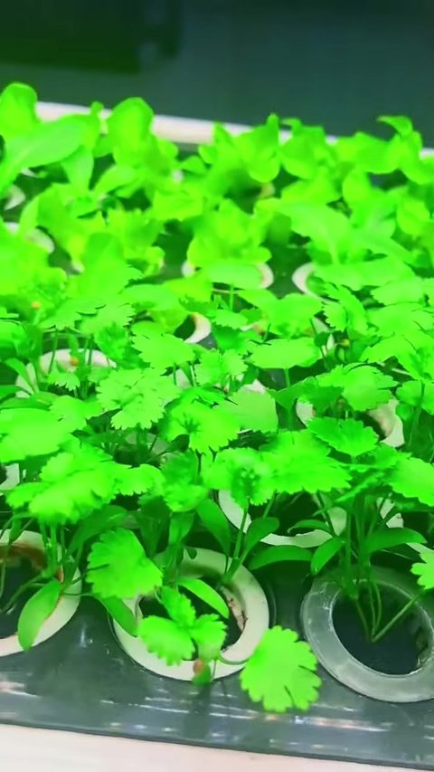

What you can grow
20 crops trialled on this system, with English and Chinese names, weeks to harvest and measured yield.
From the system
Leafy herbs growing in net cups.

20 of 20 trialled crops
- 5 wks
Local Lettuce
3.15 kg per trial system35 g per cup - 5 wks
Lettuce Lolla Rossa
红边珊瑚生菜3.06 kg per trial system34 g per cup - 5 wks
Grand Rapid Lettuce
2.83 kg per trial system31.5 g per cup - 5 wks
Lettuce Red Batavia
2.7 kg per trial system30 g per cup - 4 wks
Tong San Pak Choy
皇京白菜4.86 kg per trial system54 g per cupHarvest once, then replant - 4 wks
Green Red Leaf Bayam
绿红叶苋菜2.88 kg per trial system32.05 g per cup - 4 wks
Nai Bai
奶白4.23 kg per trial system47 g per cup - 4 wks
Red Summer Pak Choy
红夏白菜2.25 kg per trial system25 g per cupHarvest once, then replant - 5 wks
F1 Hybrid Special Pak Choy
小白菜7.77 kg per trial system86.36 g per cupHarvest once, then replant - 5 wks
Rainbow Chard
彩虹甜菜1.8 kg per trial system20 g per cup - 5 wks
Arugula
芝麻菜2.38 kg per trial system26.5 g per cup - 5 wks
Dwarf Green Curled Kale
矮绿卷曲羽衣甘蓝3.46 kg per trial system38.5 g per cupPick again: cut-and-come-again - 5 wks
Hong Kong Choy Sum
香港菜心4.05 kg per trial system45 g per cup - 5 wks
Lettuce 211
生菜4.82 kg per trial system53.5 g per cup - 5 wks
Red Russian Kale
3.15 kg per trial system35 g per cupPick again: cut-and-come-again - 5 wks
F1 Hybrid Samurai Green Choy Sum
3.78 kg per trial system42 g per cup - 7 wks
Shiso Green
绿紫苏3.78 kg per trial system42 g per cupPick again: cut-and-come-again - 7 wks
Basil Genovese
甜罗勒2.82 kg per trial system31.34 g per cupPick again: cut-and-come-again - 7 wks
Red Rubin Basil
1.75 kg per trial system19.5 g per cupPick again: cut-and-come-again - 7 wks
Italian Parsley
1.01 kg per trial system11.25 g per cupPick again: cut-and-come-again
Yield is fresh harvest weight from one full trial system in our own indoor trials. Results vary with variety, nutrients and environment. Chinese names are shown where Urban Eco supplied them.
Not sure what to plant first?
Tell Elaine who will eat it, and she will suggest a mix.